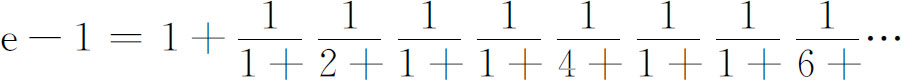
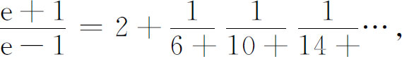
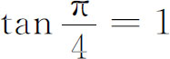
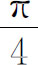

6．连分式
我们曾经指出过（第13章第2节），用连分式可以得到无理数的逼近。欧拉研究过这个课题。在他论述这个问题的第一篇题为《连分式》（De Fractionibus Continuis）的文章(33)中，他得到一组有趣的结果，例如每一个有理数都能表示为一个有限的连分式。然后他给出了表达式

和

前者曾经在1714年《哲学年刊》科茨的一篇文章中出现过。欧拉实质上还证明了e和e2是无理数。
连分式的理论基础是由欧拉在他的《引论》（第18章）中奠定的。在那里，他证明了怎样从一个级数得到这个级数的连分式表示以及反过来怎样做。
欧拉在连分式方面的工作，由欧拉和拉格朗日在柏林科学院的一位同事兰伯特（1728—1777）用来证明(34)：如果x是有理数（不是0），那么ex和tanx都不能是有理数。因此，他不仅证明了ex对正整数x是无理数，而且证明了所有有理数都有着无理的自然（底为e）对数。从关于tanx的结果推出，由于

，所以
和π都不能是有理数。兰伯特实际上证明了tanx的连分式展开的收敛性。拉格朗日(35)用连分式找到了求方程无理根的近似方法，在同一杂志(36)的另一篇文章中，他用连分式的形式给出了微分方程的近似解。在1768年的文章中，拉格朗日证明了欧拉在1744年文章中证明的一个定理的反定理，这个反定理说：二次方程的实根是周期连分式。